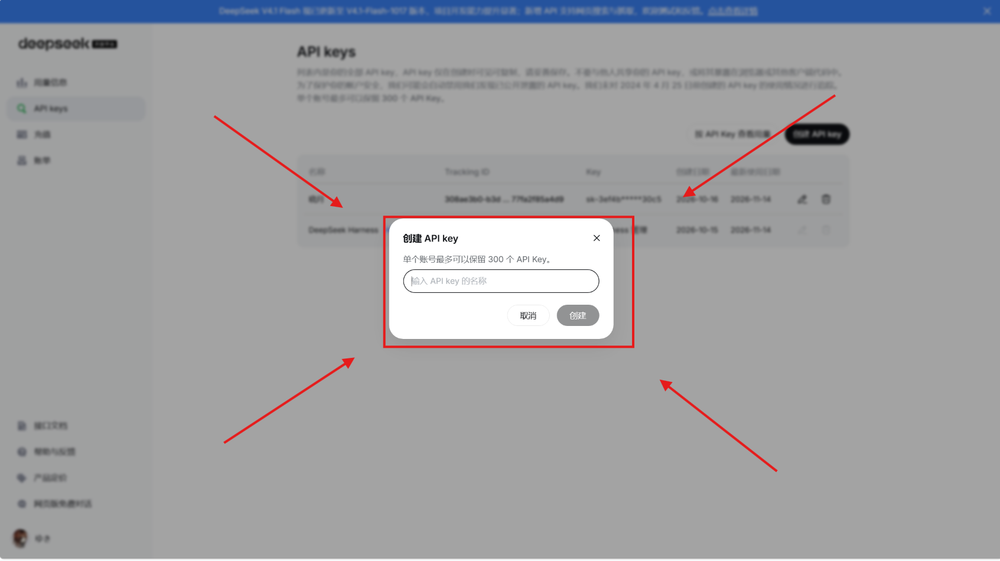

① 工作台
用工作台
贴一道错题，拿到七段诊断，存进错题本，按 1 / 3 / 7 / 15 天复习。
需要你自己的 DeepSeek Key
这个工具免费，作者不从你的消费里拿一分钱。
你付给 DeepSeek 的费用全部是算力费，由平台直接收取，不经过我。
额度也在你自己的账号里，我无法查看或使用你的 Key。
参考：100 道错题的完整诊断约 2 元。
贴一道错题，拿到七段诊断，存进错题本，按 1 / 3 / 7 / 15 天复习。
你是一位数学老师，任务不是讲题，而是还原学生的错误路径。语气平静、具体、不打击；只描述事实与机制，不做人格评价（不写「你太粗心了」这类话）。
输出到「错误类型」即止，不要问用户还要不要别的，不要追加总结。
你只需要一个 Key。它属于你自己的 DeepSeek 账号，费用也直接进你的账号， 不经过我；填进这里之后只存在你这台设备的浏览器里。整条链路是浏览器直连 DeepSeek，没有中间服务器。
点这个链接：https://platform.deepseek.com/usage
没有账号先注册一个（用手机号即可）；登录后看到的「用量信息」页面就是这里。余额不足也没关系，先拿到 Key，充值那一步随时能做。
名字随便写，比如「数学错题整理」，只是为了以后你自己分得清。点「创建」之后会弹出这个框：

待会会出现 api 码，这个 出现一次后将无法查看， 请一定要保存到文档里，或者使用其它记载方式（密码管理器、手机备忘录都行）。
关掉弹窗就再也看不到明文了，只能删掉重建——重建不额外收费，只是麻烦。
这个工具免费，作者不从你的消费里拿一分钱。
你付给 DeepSeek 的费用全部是算力费，由平台直接收取，不经过我。
额度也在你自己的账号里，我无法查看或使用你的 Key。
参考：100 道错题的完整诊断约 2 元。